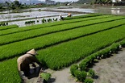

Pertanian Indonesia telah menjadi sektor yang sangat penting dalam kehidupan masyarakat di Indonesia. Dalam beberapa tahun terakhir, pertanian di Indonesia menghadapi beberapa tantangan, seperti penurunan lahan pertanian dan keterbatasan sumber daya. Oleh karena itu, diperlukan inovasi dan kebijakan yang tepat untuk meningkatkan produktivitas pertanian dan memastikan ketahanan pangan masyarakat.
Salah satu inovasi yang dapat membantu meningkatkan produktivitas pertanian adalah pertanian vertical. Pertanian vertical, juga dikenal sebagai pertanian dalam ruangan, memungkinkan penanaman sayuran dan tanaman dalam skala besar di dalam ruangan. Metode ini tidak memerlukan lahan luas dan tidak terpengaruh oleh cuaca buruk, sehingga sangat efektif dalam meningkatkan produksi tanaman. Selain itu, pertanian vertical juga dapat membantu mengurangi penggunaan air dan pupuk, sehingga lebih ramah lingkungan.
Selain pertanian vertical, menanam tanaman di halaman rumah juga dapat membantu meningkatkan ketahanan pangan masyarakat. Menanam sayuran sendiri dapat membantu menghemat uang dalam jangka panjang dan memastikan ketersediaan sayuran yang fresh dan berkualitas. Selain itu, menanam tanaman di halaman rumah juga dapat membantu meningkatkan kesadaran masyarakat terhadap pentingnya pertanian dan keterjaminan pangan.
Pemerintah Indonesia juga telah mengambil langkah-langkah untuk meningkatkan pertanian di Indonesia. Salah satu contoh adalah dengan mengembangkan pertanian urban. Pertanian urban memungkinkan masyarakat perkotaan untuk menanam tanaman di lahan terbatas, seperti di halaman rumah atau di atas atap. Kebijakan pemerintah yang mendukung pertanian urban, seperti penetapan pajak yang lebih rendah untuk rumah tangga yang memaksimalkan pemanfaatan lahan, dapat membantu meningkatkan ketersediaan bahan makanan di wilayah perkotaan.
Dalam meningkatkan pertanian di Indonesia, peran generasi milenial juga sangat penting. Mereka dapat membawa perubahan dengan menggunakan teknologi pertanian yang lebih modern dan efektif. Dengan demikian, pertanian di Indonesia dapat menjadi lebih produktif dan berkelanjutan, sehingga dapat memenuhi kebutuhan pangan masyarakat dengan lebih efektif.
Dalam kesimpulan, pertanian Indonesia hari ini memerlukan inovasi dan kebijakan yang tepat untuk meningkatkan produktivitas dan ketahanan pangan masyarakat. Menanam tanaman di halaman rumah dan mengembangkan pertanian vertical serta pertanian urban dapat membantu meningkatkan ketersediaan sayuran dan memastikan ketahanan pangan masyarakat. Selain itu, peran generasi milenial juga sangat penting dalam meningkatkan pertanian di Indonesia dengan menggunakan teknologi yang lebih modern dan efektif. Dengan demikian, pertanian di Indonesia dapat menjadi lebih produktif dan berkelanjutan, sehingga dapat memenuhi kebutuhan pangan masyarakat dengan lebih efektif.